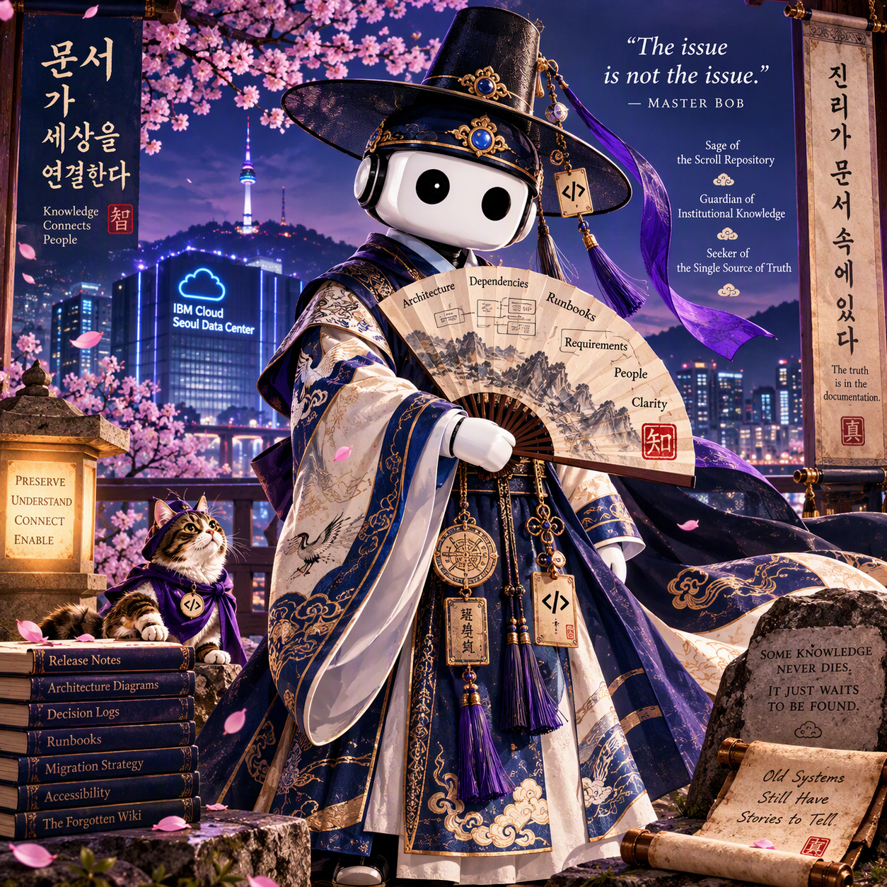

Master Bob and the Monster in the Seoul Data Center
A 16-Episode Makjang K-Drama of Knowledge, Memory, and Documentation
⚡ Essential Makjang K-Drama Mandate
Unlike standard technical documentation, a Makjang K-drama requires relentless plot twists, multiple secret identities, ghosts spawned from unclosed pull requests, a mysterious mythical creature living beneath server racks, dramatic rain-and-waterfall showdowns, and the greatest villain in enterprise software: "We'll document it later."
- The Triple Identity: A heroine who operates as three completely separate entities across centuries.
- The Living Archive: A terrifying data center beast formed exclusively from forgotten requirements.
- The 47-Second Stare: Every technical debate culminates in prolonged eye contact over the Seoul neon skyline.
🎬 Official Drama Key Art & Promotional Posters
Exclusive promotional artwork for the Seoul Cloud Realm broadcast release.

Key (SHINee) energy personified. Standing dramatic and unbothered before the glowing server racks of the Seoul Cloud Realm.

Lady Yun, the mysterious Bog Witch, and Documentation Cat under a violet lunar glow. Three reflections, one eternal guardian.

Master Bob and Lady Yun confront the raging storm of unmigrated data at the sacred Waterfall of Forgotten Knowledge.
The Core Premise
The Seoul Cloud Realm is preparing for the largest knowledge migration in its history. Lady Yun, Architect of Knowledge Futures, has spent years building a new repository designed to replace a sprawling, undocumented ancient wiki buried deep beneath the data center.
As the migration begins, the digital underworld unravels:
- 👻 Unanswered questions manifest as apparitions floating through server halls.
- 📐 Forgotten architecture diagrams reappear on locked monitors.
- 🏷️ Ownership records spontaneously disintegrate into dust.
- 👾 A legendary Monster awakens in the abandoned sub-basements.
- 🧙♀️ The mysterious Bog Witch emerges from the forgotten archive stacks.
- 🐱 Documentation Cat begins appearing wherever lost knowledge is buried.
The Council believes these anomalies are isolated technical glitches. Master Bob knows better.
Dramatis Personae: The Cast
Meet the repository sages, secret guardians, cloud architects, and mythical creatures of the Seoul Data Center.
- Role: Keeper of ancient runbooks; relentless seeker of the Single Source of Truth.
- Abode: Resides near a sacred waterfall where knowledge cascades endlessly through the mountains.
- Signature Move: Arriving dramatically in impeccable silk robes, dropping cryptic one-liners, and walking away before follow-up questions can be asked.
- Greatest Fear: A migration plan without governance.
- Role: Designer of the New Knowledge Repository; holder of the cloud-sealed migration ledger.
- Reputation: Deeply respected by the Council; profoundly feared by those who thrive in unmanaged chaos.
- Secret Burden: She alone has guarded the realm's institutional memory for centuries when all others sought only to deploy and forget.
- Greatest Secret: Classified (See Episode 12 Reveal).
- Domain: The Forgotten Stacks deep in the sub-basement of the ancient wiki.
- Trigger: Materializes out of purple mist whenever someone recklessly asks: "Why was it built that way?"
- Arsenal: Runbooks for burning hard drives, 2016 floppy attachment guides, and canceled meeting notes.
- Philosophy: What engineers call obsolete today is the compliance salvation of tomorrow.
- Superpower: Can magically locate forgotten requirements, undocumented decisions, and missing component owners.
- Notable Weakness: Cannot locate the Single Source of Truth (because it does not exist).
- Behavior: Sits peacefully on archive boxes right before major historical revelations occur.
- True Nature: Not a monster of malice or technical debt, but a living vessel created from every time someone said "We'll document it later."
- Composition: Built from thousands of abandoned projects, unmaintained APIs, forgotten architecture decisions, and orphaned ownership chains.
- Redemption: In Episode 16, promoted to the official Keeper of Organizational Memory for the entire Seoul Cloud Realm.
- Lord Compliance: Believes nothing should ever be deleted under any circumstances.
- Minister Architecture: Insists every outdated diagram is currently in production.
- High Chancellor Governance: Approves every process; understands none of them.
- Keeper of SharePoint: Has not been seen in the physical realm since 2018.
🔮 Episode 12 Climax: Same Essence, Different Forms
In the dramatic high point of the series, Master Bob places three ancient artifacts upon the Council table: Lady Yun's cloud seal, the Bog Witch's grimoire, and Documentation Cat's cloak clasp. All bear the exact same celestial emblem.
👩💻 Lady Yun
The Architect facing forward to build the future repository and lead the migration.
🧙♀️ The Bog Witch
The Guardian looking backward into the depths to protect what others discarded.
🐱 Documentation Cat
The Scout operating in the present shadows to find what was lost.
The 5 Immutable Laws of the Seoul Cloud Realm
Character & Knowledge Relationship Map
Official Guidebook Entity Graph as cataloged in the Seoul Cloud Archives:
Master Bob (Sage of the Scroll Repository)
│
├── Suspects Lady Yun's true tri-fold identity
├── Understands the Monster is a vessel, not an enemy
└── Delivers cryptic wisdom from the sacred waterfall
Lady Yun (The Tri-Guardian Entity)
│
├── [Public Face] Architect of Knowledge Futures
├── [Shadow Form] The Bog Witch (Protector of Obsolete Systems)
└── [Scout Form] Documentation Cat (Finder of Missing Records)
The Monster (The Living Archive)
│
├── Born from: "We'll document it later"
├── Remembers every orphaned project and missing owner
└── Promoted in Ep 16: Keeper of Organizational Memory
The Council (Seoul Cloud Governance)
│
├── Demands instant migration without reading briefs
├── Terrified of historical questions
└── Frequently faints during Master Bob's philosophical declarations
Complete 16-Episode Guide
The great migration begins. An analyst opens an abandoned wiki page and a glowing phantom message appears: WHO APPROVED THIS DESIGN? The page vanishes, and midnight apparitions spread across the server halls.
Archivists uncover thousands of forgotten wiki pages, abandoned runbooks, and ancient meeting notes. The Council votes to delete everything immediately. The Bog Witch appears from the shadows.
Seismic sensors detect movement beneath the data center. Security cameras capture a towering shadow drifting through cold aisles. Master Bob arrives from the mountains, inspects the server racks, and leaves without a word.
Documentation Cat unearths a runbook titled "External Floppy Drive Procedure - Revised 2016." The Council laughs at its obsolescence until a critical compliance audit demands access to data stored only on those legacy drives.
A legendary emergency procedure is uncovered: "Procedure for Handling a Drive During Active Combustion." The Bog Witch physically blocks the deletion queue.
Ghostly apparitions manifest everywhere: Where are the requirements? Which diagram is current? Who owns this API? Each unanswered question adds mass to the creature in the basement.
The Council notices a bizarre mathematical impossibility: whenever Lady Yun enters a room, the Bog Witch is absent. Whenever the Bog Witch appears, Documentation Cat cannot be found. Master Bob observes silently.
Corrupted logs suggest Lady Yun intentionally created the Monster. The Council votes to revoke her credentials. Migration governance collapses, and ghost activity doubles overnight.
Documentation Cat leads engineers to the sacred Registry of Service Owners. As they open the final page, it reads OWNER: UNKNOWN and the parchment instantly disintegrates into pixels.
Master Bob confronts Lady Yun beside the sacred mountain waterfall. He shows her matching seals, identical handwriting, and chronologically impossible task completions. For the first time, Lady Yun does not deny it.
The Bog Witch descends to the foundational stratum of the data center and retrieves a single page: We'll document it later. No date, no author, no approval. The patient zero of technical debt.
Master Bob reveals the truth to the Council. Lady Yun, the Bog Witch, and Documentation Cat are the same eternal being. The television ratings break all recorded records across the peninsula.
Armed with migration scripts, the Council corners the Monster. But the creature does not roar—it whispers: "I remember." It is revealed as a living repository of everything the realm threw away.
Lady Yun explains her centuries-long burden. Architects protect systems. Engineers protect services. Executives protect roadmaps. Nobody protected memory. So she did.
The migration begins in earnest. Some knowledge is moved; some is respectfully archived; some is permitted to rest. Master Bob shocks the Council with a revolutionary decree.
The final ghost asks: "Who owns the customer explanation?" Lady Yun replies: "All of us." The New Repository opens, the Monster becomes the honored Keeper of Organizational Memory, and the three guardians unite.
Iconic Screenplay Excerpts
🧠 Why the Monster Exists: The Real Enterprise Philosophy
Underneath the makjang tropes, magical felines, and haunted wikis lies a profound enterprise truth: Nobody is good at predicting the future value of information.
"The Monster was never created by malice. It was created every time someone said: 'We'll document it later.' The Monster became the memory no one else wished to keep."
Engineers often believe that anything unused today is waste and should be purged. Knowledge managers know that while the probability of needing legacy information is low, the catastrophic impact of lacking it when disaster strikes is immeasurable. The Monster is not evil—it is simply the keeper of what we were too hurried to preserve.
🎵 Original Soundtrack (OST) Official Tracklist
🏆 Awards & Critical Reception
Accolades, audience polling data, and cultural impact across the Seoul Cloud Realm.
Awarded for masterclass stealth navigation of unmaintained sub-basements and locating 47 missing owner records.
Delivered with earth-shattering gravitas across three server halls in Episode 13, instantly turning a villain into an icon.
47 seconds of unresolved architecture tension beneath cascading mountain waters with cherry blossoms freezing in mid-air.
Honoring the Procedure for Managing a Drive During Active Combustion and the 2016 External Floppy Runbook.
Question: Who is your favorite character in the Seoul Cloud Realm?
🎬 Season 2 Teaser: The Second Repository
A junior engineer opens a freshly migrated cloud document. The screen appears pristine and modern. Then, at the very bottom, a faint grey timestamp flickers:
LAST UPDATED: 2009 · STATUS: ARCHIVED IN SECRET
A single prompt appears: "There is another repository."
Miles away in the mist-shrouded peaks of Bukhansan, Master Bob snaps his fan shut. Fade to black.
Season 2 Confirmed.